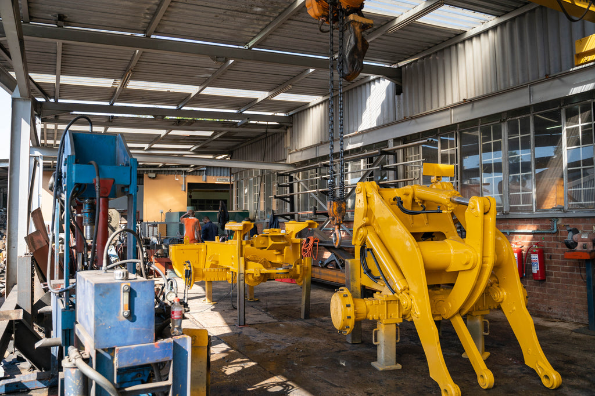

POWERTRANS
SALES AND SERVICES
Powertrans offers solution based services,through unprecedented access to World class equipment for diagnetics of repairs.
ENGINEERING-REBUILD CENTRE
Our team consists of professionals&perfected their knowledge of systems to become leading re-manufacturers of heavy earthmoving equipment
ENGINE DEPARTMENT
Our specialised team at this department rebuild engines that often
dertined for the scrap yard, Dyno-testing is litergal to our diagnostics
process.
Every engine&component are re-manufactured according to OEM standards.
The Engine department is(DEKRA)+ SABS,SAN1024,SABS9001 accredited.

STORES
Contact our friendly sales team,for quick helpful helpful response
query,be it Automotive,earthmoving on highway or even off road.
* We have STOCKHOLDING that consist of engines such as(ADE,John Deere, Kirloskar+Cummins)
Transmission(Z.F,Allsion,Clark,Twindisc,Funk,John deere)
*We also stock wide range of Bell parts including diff spares.
*Always offer most cost-effective solutions.
TRANSMISSION
As an Accredited Allsion& ZF agent,Our highly skilled technician rebuilds
all makes of trnsmission to OEM specs and standards,this includes automotive as well.
*The Transmission rebuild centre has the state of art Diagnostics,Tools,Dyno testing as SABS 9001 requirements.
*We also provide after sales services as our technicians are on 24hour call.
CONTACT DETAILS
Address : 14-16 Blue Street, Isithebe, KZN
Cell : 0614131157/061862938
Tell : 032-4595700